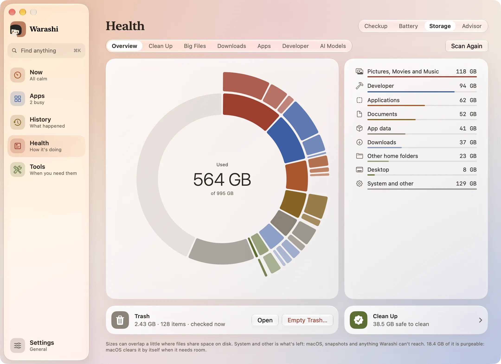

Menyeret app ke Tong Sampah menghapus app tetapi meninggalkan sisanya: cache, preferensi, status tersimpan, log, kadang berukuran gigabyte di ~/Library. Berikut tempat app menyimpan barang-barangnya di Mac, cara menemukan sisa app yang sudah dihapus, dan cara membersihkannya tanpa menghapus sesuatu yang akan Anda cari nanti.
Di mana app menyimpan file mereka
App menyimpan hampir semuanya di Library pengguna Anda, yang disembunyikan Finder. Tahan ⌥ saat membuka menu Buka di Finder untuk melihatnya. Lokasi yang umum, diberi nama sesuai identifier bundle app (seperti com.company.app):
~/Library/Application Support/: data milik app itu sendiri, sering kali yang terbesar.~/Library/Caches/: aman dihapus; app membangunnya kembali.~/Library/Preferences/: pengaturan, kecil.~/Library/Containers/danGroup Containers/: data app yang di-sandbox.~/Library/Saved Application State/,Logs/,HTTPStorages/,WebKit/: kecil, aman dihapus.~/Library/LaunchAgents/: pembantu yang mulai saat masuk; hapus milik app agar ia berhenti mencoba berjalan.
Urutan yang tidak salah
- Keluar dari app, dan pembantu bar menunya jika ada.
- Gunakan uninstaller bawaan app jika ada (banyak alat pengembang dan app antivirus memilikinya).
- Pindahkan app ke Tong Sampah dari Aplikasi. Jika macOS meminta kata sandi Anda, berarti app itu memasang pembantu; itu normal.
- Temukan sisa file dengan mencari di tiap folder di atas nama app dan pengenal bundle-nya.
- Pindahkan juga ke Tong Sampah, dan biarkan Tong Sampah selama beberapa hari sebelum mengosongkannya, kalau-kalau ada yang ternyata dipakai bersama app lain.


Apa yang jangan dihapus
Apa pun di Group Containers yang dipakai bersama oleh beberapa app dari pengembang yang sama, apa pun di bawah /Library (yang berlaku untuk seluruh sistem) yang tidak Anda kenali, dan folder iCloud Drive milik app yang dokumennya masih Anda perlukan. Jika ragu, biarkan saja: sisa file hanya memakan ruang disk, sedangkan penghapusan yang keliru bisa menghilangkan data.
Sisa app yang sudah lama Anda hapus
Setiap Mac menumpuk folder dari app yang sudah tidak ada: percobaan yang terlupakan, alat yang sudah diganti. Mudah dikenali begitu Anda tahu polanya: folder di Application Support atau Containers yang identifier bundle-nya tidak cocok dengan app mana pun di Aplikasi. Inilah hal paling aman di disk untuk dibersihkan.
Mengapa bukan pembersih yang menghapus untuk Anda?
Karena risikonya ada pada satu file yang salah dikenali. Pilih alat yang menampilkan setiap item, memindahkannya ke Tong Sampah alih-alih menghapusnya, dan tidak pernah menyentuh apa pun yang tidak bisa dikaitkan dengan app berdasarkan identifier atau nama.